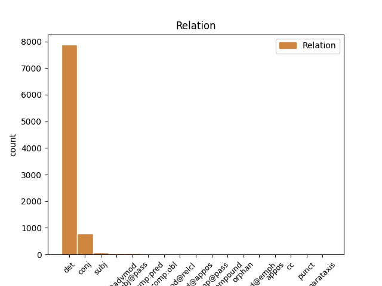
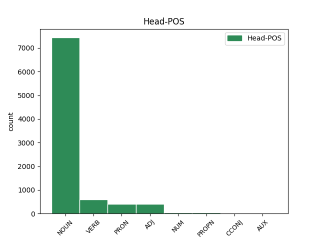
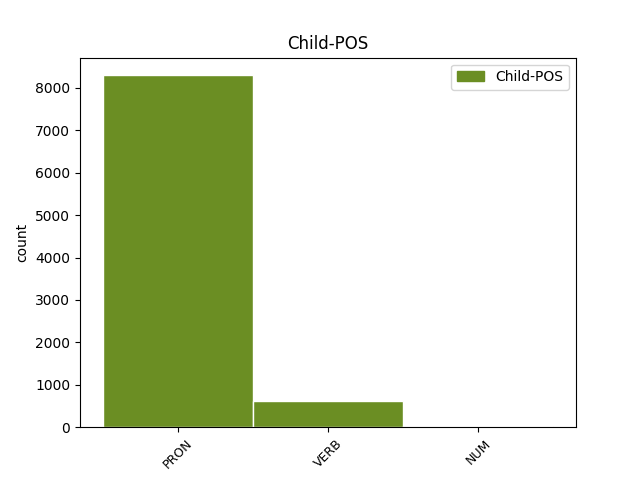

Distribution of features within this leaf



Agreement Rules sorted by frequency.
- When the dependent token is the determiner(det) of the head token, and the dependent token is PRON.
1 cum _ _ _ _ 0 _ _ _
2 enim _ _ _ _ 0 _ _ _
3 forma _ _ _ _ 0 _ _ _
4 sit _ _ _ _ 0 _ _ _
5 actus _ _ _ _ 0 _ _ _
6 , _ _ _ _ 0 _ _ _
7 materia _ _ _ _ 0 _ _ _
8 vero _ _ _ _ 0 _ _ _
9 sit _ _ _ _ 0 _ _ _
10 ens _ _ _ _ 0 _ _ _
11 in _ _ _ _ 0 _ _ _
12 potentia _ _ _ _ 0 _ _ _
13 tantum _ _ _ _ 0 _ _ _
14 ; _ _ _ _ 0 _ _ _
15 nullo _ _ _ _ 0 _ _ _
16 modo _ _ _ _ 0 _ _ _
17 id _ _ _ _ 0 _ _ _
18 quod _ _ _ _ 0 _ _ _
19 est _ _ _ _ 0 _ _ _
20 ex _ _ _ _ 0 _ _ _
21 materia _ _ _ _ 0 _ _ _
22 et _ _ _ _ 0 _ _ _
23 forma _ _ _ _ 0 _ _ _
24 compositum _ _ _ _ 0 _ _ _
25 , _ _ _ _ 0 _ _ _
26 potest _ _ _ _ 0 _ _ _
27 esse _ _ _ _ 0 _ _ _
28 alterius _ _ _ _ 0 _ _ _
29 forma _ _ _ _ 0 _ _ _
30 secundum _ _ _ _ 0 _ _ _
31 se se PRON F1|grn1|casD|gen3 Case=Acc|Degree=Pos|Gender=Neut|Number=Sing|PronType=Prs|Reflex=Yes 0 _ _ _
32 totum totus PRON F1|grn1|casD|gen3 Case=Acc|Degree=Pos|Gender=Neut|Number=Sing|PronType=Ind 31 det _ SpaceAfter=No
33 . _ _ _ _ 0 _ _ _
1 et _ _ _ _ 0 _ _ _
2 ideo _ _ _ _ 0 _ _ _
3 per _ _ _ _ 0 _ _ _
4 congregationem _ _ _ _ 0 _ _ _
5 aquarum _ _ _ _ 0 _ _ _
6 et _ _ _ _ 0 _ _ _
7 apparentiam _ _ _ _ 0 _ _ _
8 aridae _ _ _ _ 0 _ _ _
9 , _ _ _ _ 0 _ _ _
10 impressio _ _ _ _ 0 _ _ _
11 talium _ _ _ _ 0 _ _ _
12 formarum _ _ _ _ 0 _ _ _
13 designatur _ _ _ _ 0 _ _ _
14 , _ _ _ _ 0 _ _ _
15 aqua _ _ _ _ 0 _ _ _
16 enim _ _ _ _ 0 _ _ _
17 est _ _ _ _ 0 _ _ _
18 labiliter _ _ _ _ 0 _ _ _
19 fluxa fluo VERB L2|modM|tem4|grp1|casA|gen2 Aspect=Perf|Case=Nom|Degree=Pos|Gender=Fem|Number=Sing|Tense=Past|VerbForm=Part|Voice=Pass 0 _ _ _
20 , _ _ _ _ 0 _ _ _
21 terra _ _ _ _ 0 _ _ _
22 stabiliter _ _ _ _ 0 _ _ _
23 fixa figo VERB L2|modM|tem4|grp1|casA|gen2 Aspect=Perf|Case=Nom|Degree=Pos|Gender=Fem|Number=Sing|Tense=Past|VerbForm=Part|Voice=Pass 19 conj _ SpaceAfter=No
24 , _ _ _ _ 0 _ _ _
25 ut _ _ _ _ 0 _ _ _
26 ipse _ _ _ _ 0 _ _ _
27 dicit _ _ _ _ 0 _ _ _
28 in _ _ _ _ 0 _ _ _
29 ii _ _ _ _ 0 _ _ _
30 super _ _ _ _ 0 _ _ _
31 gen. _ _ _ _ 0 _ _ _
32 ad _ _ _ _ 0 _ _ _
33 litt. _ _ _ _ 0 _ _ _
34 . _ _ _ _ 0 _ _ _
1 anima _ _ _ _ 0 _ _ _
2 igitur _ _ _ _ 0 _ _ _
3 intellectiva _ _ _ _ 0 _ _ _
4 est _ _ _ _ 0 _ _ _
5 forma forma NOUN A1|grn1|casA|gen2 Case=Nom|Degree=Pos|Gender=Fem|Number=Sing 0 _ _ _
6 absoluta _ _ _ _ 0 _ _ _
7 , _ _ _ _ 0 _ _ _
8 non _ _ _ _ 0 _ _ _
9 autem _ _ _ _ 0 _ _ _
10 aliquid aliquis PRON F1|grn1|casA|gen3 Case=Nom|Degree=Pos|Gender=Neut|Number=Sing|PronType=Ind 5 conj _ _
11 compositum _ _ _ _ 0 _ _ _
12 ex _ _ _ _ 0 _ _ _
13 materia _ _ _ _ 0 _ _ _
14 et _ _ _ _ 0 _ _ _
15 forma _ _ _ _ 0 _ _ _
16 . _ _ _ _ 0 _ _ _
1 lux _ _ _ _ 0 _ _ _
2 autem _ _ _ _ 0 _ _ _
3 non _ _ _ _ 0 _ _ _
4 est _ _ _ _ 0 _ _ _
5 forma _ _ _ _ 0 _ _ _
6 substantialis _ _ _ _ 0 _ _ _
7 aeris _ _ _ _ 0 _ _ _
8 , _ _ _ _ 0 _ _ _
9 alioquin _ _ _ _ 0 _ _ _
10 , _ _ _ _ 0 _ _ _
11 ea is PRON F1|grn1|casF|gen2 Case=Abl|Degree=Pos|Gender=Fem|Number=Sing|PronType=Dem,Prs 12 subj _ _
12 recedente recedo VERB L2|modD|tem1|grp1|casF|gen2 Case=Abl|Degree=Pos|Gender=Fem|Number=Sing|Tense=Pres|VerbForm=Part|Voice=Act 0 _ _ _
13 , _ _ _ _ 0 _ _ _
14 corrumperetur _ _ _ _ 0 _ _ _
15 . _ _ _ _ 0 _ _ _
1 et _ _ _ _ 0 _ _ _
2 ideo _ _ _ _ 0 _ _ _
3 alii _ _ _ _ 0 _ _ _
4 dicunt _ _ _ _ 0 _ _ _
5 , _ _ _ _ 0 _ _ _
6 et _ _ _ _ 0 _ _ _
7 melius _ _ _ _ 0 _ _ _
8 , _ _ _ _ 0 _ _ _
9 quod _ _ _ _ 0 _ _ _
10 christus _ _ _ _ 0 _ _ _
11 ea _ _ _ _ 0 _ _ _
12 semel _ _ _ _ 0 _ _ _
13 tantum _ _ _ _ 0 _ _ _
14 protulit _ _ _ _ 0 _ _ _
15 , _ _ _ _ 0 _ _ _
16 et _ _ _ _ 0 _ _ _
17 eis is PRON F1|grn1|casO|gen3|vgr1 Case=Abl|Degree=Pos|Gender=Neut|Number=Plur|PronType=Dem,Prs 19 subj@pass _ _
18 semel _ _ _ _ 0 _ _ _
19 prolatis profero VERB N2|modM|tem4|grp1|casO|gen3 Aspect=Perf|Case=Abl|Degree=Pos|Gender=Neut|Number=Plur|Tense=Past|VerbForm=Part|Voice=Pass 0 _ _ _
20 consecravit _ _ _ _ 0 _ _ _
21 , _ _ _ _ 0 _ _ _
22 et _ _ _ _ 0 _ _ _
23 formam _ _ _ _ 0 _ _ _
24 consecrandi _ _ _ _ 0 _ _ _
25 dedit _ _ _ _ 0 _ _ _
26 . _ _ _ _ 0 _ _ _
1 sequitur _ _ _ _ 0 _ _ _
2 ulterius _ _ _ _ 0 _ _ _
3 quod _ _ _ _ 0 _ _ _
4 etiam _ _ _ _ 0 _ _ _
5 formae _ _ _ _ 0 _ _ _
6 corporales _ _ _ _ 0 _ _ _
7 a _ _ _ _ 0 _ _ _
8 substantiis substantia NOUN A1|grn1|casO|gen2 Case=Abl|Degree=Pos|Gender=Fem|Number=Plur 0 _ _ _
9 spiritualibus _ _ _ _ 0 _ _ _
10 deriventur _ _ _ _ 0 _ _ _
11 , _ _ _ _ 0 _ _ _
12 non _ _ _ _ 0 _ _ _
13 tanquam _ _ _ _ 0 _ _ _
14 influentibus influo VERB L2|modD|tem1|grp1|casO|gen2 Case=Abl|Degree=Pos|Gender=Fem|Number=Plur|Tense=Pres|VerbForm=Part|Voice=Act 8 mod@advmod _ _
15 formas _ _ _ _ 0 _ _ _
16 , _ _ _ _ 0 _ _ _
17 sed _ _ _ _ 0 _ _ _
18 tanquam _ _ _ _ 0 _ _ _
19 moventibus _ _ _ _ 0 _ _ _
20 ad _ _ _ _ 0 _ _ _
21 formas _ _ _ _ 0 _ _ _
22 . _ _ _ _ 0 _ _ _
1 in _ _ _ _ 0 _ _ _
2 divinis _ _ _ _ 0 _ _ _
3 autem _ _ _ _ 0 _ _ _
4 essentia _ _ _ _ 0 _ _ _
5 divina _ _ _ _ 0 _ _ _
6 significatur _ _ _ _ 0 _ _ _
7 per _ _ _ _ 0 _ _ _
8 modum _ _ _ _ 0 _ _ _
9 formae _ _ _ _ 0 _ _ _
10 , _ _ _ _ 0 _ _ _
11 ut _ _ _ _ 0 _ _ _
12 dictum _ _ _ _ 0 _ _ _
13 est _ _ _ _ 0 _ _ _
14 quae _ _ _ _ 0 _ _ _
15 quidem _ _ _ _ 0 _ _ _
16 simplex simplex ADJ C1|grn1|casA|gen2 Case=Nom|Degree=Pos|Gender=Fem|Number=Sing 0 _ _ _
17 est _ _ _ _ 0 _ _ _
18 et _ _ _ _ 0 _ _ _
19 maxime _ _ _ _ 0 _ _ _
20 una unus NUM F1|grn1|casA|gen2 Case=Nom|Degree=Pos|Gender=Fem|Number=Sing|NumType=Card 16 conj _ SpaceAfter=No
21 , _ _ _ _ 0 _ _ _
22 ut _ _ _ _ 0 _ _ _
23 supra _ _ _ _ 0 _ _ _
24 ostensum _ _ _ _ 0 _ _ _
25 est _ _ _ _ 0 _ _ _
26 . _ _ _ _ 0 _ _ _
1 sicut _ _ _ _ 0 _ _ _
2 etiam _ _ _ _ 0 _ _ _
3 in _ _ _ _ 0 _ _ _
4 rebus _ _ _ _ 0 _ _ _
5 naturalibus _ _ _ _ 0 _ _ _
6 potest _ _ _ _ 0 _ _ _
7 assignari _ _ _ _ 0 _ _ _
8 ratio _ _ _ _ 0 _ _ _
9 , _ _ _ _ 0 _ _ _
10 cum _ _ _ _ 0 _ _ _
11 prima _ _ _ _ 0 _ _ _
12 materia materia NOUN A1|grn1|casA|gen2 Case=Nom|Degree=Pos|Gender=Fem|Number=Sing 0 _ _ _
13 tota totus PRON F1|grn1|casA|gen2 Case=Nom|Degree=Pos|Gender=Fem|Number=Sing|PronType=Ind 12 mod@advmod _ _
14 sit _ _ _ _ 0 _ _ _
15 in _ _ _ _ 0 _ _ _
16 se _ _ _ _ 0 _ _ _
17 uniformis _ _ _ _ 0 _ _ _
18 , _ _ _ _ 0 _ _ _
19 quare _ _ _ _ 0 _ _ _
20 una _ _ _ _ 0 _ _ _
21 pars _ _ _ _ 0 _ _ _
22 eius _ _ _ _ 0 _ _ _
23 est _ _ _ _ 0 _ _ _
24 sub _ _ _ _ 0 _ _ _
25 forma _ _ _ _ 0 _ _ _
26 ignis _ _ _ _ 0 _ _ _
27 , _ _ _ _ 0 _ _ _
28 et _ _ _ _ 0 _ _ _
29 alia _ _ _ _ 0 _ _ _
30 sub _ _ _ _ 0 _ _ _
31 forma _ _ _ _ 0 _ _ _
32 terrae _ _ _ _ 0 _ _ _
33 , _ _ _ _ 0 _ _ _
34 a _ _ _ _ 0 _ _ _
35 deo _ _ _ _ 0 _ _ _
36 in _ _ _ _ 0 _ _ _
37 principio _ _ _ _ 0 _ _ _
38 condita _ _ _ _ 0 _ _ _
39 , _ _ _ _ 0 _ _ _
40 ut _ _ _ _ 0 _ _ _
41 scilicet _ _ _ _ 0 _ _ _
42 sit _ _ _ _ 0 _ _ _
43 diversitas _ _ _ _ 0 _ _ _
44 specierum _ _ _ _ 0 _ _ _
45 in _ _ _ _ 0 _ _ _
46 rebus _ _ _ _ 0 _ _ _
47 naturalibus _ _ _ _ 0 _ _ _
48 . _ _ _ _ 0 _ _ _
1 primo _ _ _ _ 0 _ _ _
2 per _ _ _ _ 0 _ _ _
3 hoc _ _ _ _ 0 _ _ _
4 quod _ _ _ _ 0 _ _ _
5 habetur _ _ _ _ 0 _ _ _
6 in _ _ _ _ 0 _ _ _
7 lib. _ _ _ _ 0 _ _ _
8 de _ _ _ _ 0 _ _ _
9 causis _ _ _ _ 0 _ _ _
10 , _ _ _ _ 0 _ _ _
11 quia _ _ _ _ 0 _ _ _
12 intelligentiae _ _ _ _ 0 _ _ _
13 primae _ _ _ _ 0 _ _ _
14 influunt _ _ _ _ 0 _ _ _
15 formas _ _ _ _ 0 _ _ _
16 fixas figo VERB L2|modM|tem4|grp1|casM|gen2 Aspect=Perf|Case=Acc|Degree=Pos|Gender=Fem|Number=Plur|Tense=Past|VerbForm=Part|Voice=Pass 17 comp:pred _ _
17 stantes sto VERB J2|modD|tem1|grp1|casM|gen2 Case=Acc|Degree=Pos|Gender=Fem|Number=Plur|Tense=Pres|VerbForm=Part|Voice=Act 0 _ _ _
18 , _ _ _ _ 0 _ _ _
19 sicut _ _ _ _ 0 _ _ _
20 est _ _ _ _ 0 _ _ _
21 anima _ _ _ _ 0 _ _ _
22 . _ _ _ _ 0 _ _ _
1 remota _ _ _ _ 0 _ _ _
2 ergo _ _ _ _ 0 _ _ _
3 per _ _ _ _ 0 _ _ _
4 intellectum _ _ _ _ 0 _ _ _
5 substantia _ _ _ _ 0 _ _ _
6 separata _ _ _ _ 0 _ _ _
7 quae _ _ _ _ 0 _ _ _
8 ponitur _ _ _ _ 0 _ _ _
9 motor _ _ _ _ 0 _ _ _
10 , _ _ _ _ 0 _ _ _
11 si _ _ _ _ 0 _ _ _
12 corpus _ _ _ _ 0 _ _ _
13 caeleste _ _ _ _ 0 _ _ _
14 non _ _ _ _ 0 _ _ _
15 est _ _ _ _ 0 _ _ _
16 habens _ _ _ _ 0 _ _ _
17 formam _ _ _ _ 0 _ _ _
18 , _ _ _ _ 0 _ _ _
19 quod _ _ _ _ 0 _ _ _
20 est _ _ _ _ 0 _ _ _
21 componi _ _ _ _ 0 _ _ _
22 ex _ _ _ _ 0 _ _ _
23 forma _ _ _ _ 0 _ _ _
24 et _ _ _ _ 0 _ _ _
25 subiecto _ _ _ _ 0 _ _ _
26 formae _ _ _ _ 0 _ _ _
27 , _ _ _ _ 0 _ _ _
28 sequitur _ _ _ _ 0 _ _ _
29 quod _ _ _ _ 0 _ _ _
30 sit _ _ _ _ 0 _ _ _
31 totum totus PRON F1|grn1|casA|gen3 Case=Nom|Degree=Pos|Gender=Neut|Number=Sing|PronType=Ind 32 comp:pred _ _
32 forma forma NOUN A1|grn1|casA|gen2 Case=Nom|Degree=Pos|Gender=Fem|Number=Sing 0 _ _ _
33 et _ _ _ _ 0 _ _ _
34 actus _ _ _ _ 0 _ _ _
35 . _ _ _ _ 0 _ _ _
1 et _ _ _ _ 0 _ _ _
2 ideo _ _ _ _ 0 _ _ _
3 alii _ _ _ _ 0 _ _ _
4 dicunt _ _ _ _ 0 _ _ _
5 , _ _ _ _ 0 _ _ _
6 quod _ _ _ _ 0 _ _ _
7 dicta _ _ _ _ 0 _ _ _
8 completio _ _ _ _ 0 _ _ _
9 , _ _ _ _ 0 _ _ _
10 ex _ _ _ _ 0 _ _ _
11 quo _ _ _ _ 0 _ _ _
12 corpora _ _ _ _ 0 _ _ _
13 humana _ _ _ _ 0 _ _ _
14 subtilia _ _ _ _ 0 _ _ _
15 dicentur _ _ _ _ 0 _ _ _
16 , _ _ _ _ 0 _ _ _
17 erit _ _ _ _ 0 _ _ _
18 ex _ _ _ _ 0 _ _ _
19 dominio _ _ _ _ 0 _ _ _
20 animae _ _ _ _ 0 _ _ _
21 glorificatae _ _ _ _ 0 _ _ _
22 , _ _ _ _ 0 _ _ _
23 quae _ _ _ _ 0 _ _ _
24 est _ _ _ _ 0 _ _ _
25 forma _ _ _ _ 0 _ _ _
26 corporis _ _ _ _ 0 _ _ _
27 , _ _ _ _ 0 _ _ _
28 super _ _ _ _ 0 _ _ _
29 ipsum _ _ _ _ 0 _ _ _
30 , _ _ _ _ 0 _ _ _
31 ratione _ _ _ _ 0 _ _ _
32 cujus _ _ _ _ 0 _ _ _
33 corpus _ _ _ _ 0 _ _ _
34 gloriosum _ _ _ _ 0 _ _ _
35 spirituale spiritualis ADJ C1|grn1|casA|gen3|vgr1 Case=Nom|Degree=Pos|Gender=Neut|Number=Sing 0 _ _ _
36 dicitur _ _ _ _ 0 _ _ _
37 , _ _ _ _ 0 _ _ _
38 quasi _ _ _ _ 0 _ _ _
39 omnino _ _ _ _ 0 _ _ _
40 spiritui _ _ _ _ 0 _ _ _
41 subjectum subicio VERB L2|modM|tem4|grp1|casA|gen3|vgr1 Aspect=Perf|Case=Nom|Degree=Pos|Gender=Neut|Number=Sing|Tense=Past|VerbForm=Part|Voice=Pass 35 mod@appos _ SpaceAfter=No
42 . _ _ _ _ 0 _ _ _
1 ad _ _ _ _ 0 _ _ _
2 secundum _ _ _ _ 0 _ _ _
3 dicendum _ _ _ _ 0 _ _ _
4 quod _ _ _ _ 0 _ _ _
5 forma _ _ _ _ 0 _ _ _
6 generati _ _ _ _ 0 _ _ _
7 non _ _ _ _ 0 _ _ _
8 est _ _ _ _ 0 _ _ _
9 finis _ _ _ _ 0 _ _ _
10 generationis _ _ _ _ 0 _ _ _
11 nisi _ _ _ _ 0 _ _ _
12 inquantum _ _ _ _ 0 _ _ _
13 est _ _ _ _ 0 _ _ _
14 similitudo _ _ _ _ 0 _ _ _
15 formae forma NOUN A1|grn1|casB|gen2|vgr1 Case=Gen|Degree=Pos|Gender=Fem|Number=Sing 0 _ _ _
16 generantis genero VERB J2|modD|tem1|grp1|casB|gen3 Case=Gen|Degree=Pos|Gender=Neut|Number=Sing|Tense=Pres|VerbForm=Part|Voice=Act 15 mod@relcl _ SpaceAfter=No
17 , _ _ _ _ 0 _ _ _
18 quod _ _ _ _ 0 _ _ _
19 suam _ _ _ _ 0 _ _ _
20 similitudinem _ _ _ _ 0 _ _ _
21 communicare _ _ _ _ 0 _ _ _
22 intendit _ _ _ _ 0 _ _ _
23 . _ _ _ _ 0 _ _ _
1 et _ _ _ _ 0 _ _ _
2 ideo _ _ _ _ 0 _ _ _
3 in _ _ _ _ 0 _ _ _
4 praenuntiando _ _ _ _ 0 _ _ _
5 futura _ _ _ _ 0 _ _ _
6 mirabiliores _ _ _ _ 0 _ _ _
7 et _ _ _ _ 0 _ _ _
8 veraciores _ _ _ _ 0 _ _ _
9 apparent _ _ _ _ 0 _ _ _
10 quam _ _ _ _ 0 _ _ _
11 homines _ _ _ _ 0 _ _ _
12 quantumcumque quantuscumque PRON B1|grn1|casA|gen3|vgr2 Case=Nom|Degree=Pos|Gender=Neut|Number=Sing|PronType=Ind 13 mod@emph _ _
13 scientes scio VERB M2|modD|tem1|grp1|casJ|gen1 Case=Nom|Degree=Pos|Gender=Masc|Number=Plur|Tense=Pres|VerbForm=Part|Voice=Act 0 _ _ _
14 . _ _ _ _ 0 _ _ _
1 sed _ _ _ _ 0 _ _ _
2 in _ _ _ _ 0 _ _ _
3 eucharistia _ _ _ _ 0 _ _ _
4 sunt _ _ _ _ 0 _ _ _
5 duae _ _ _ _ 0 _ _ _
6 formae forma NOUN A1|grn1|casJ|gen2|vgr1 Case=Nom|Degree=Pos|Gender=Fem|Number=Plur 0 _ _ _
7 , _ _ _ _ 0 _ _ _
8 una unus NUM F1|grn1|casA|gen2 Case=Nom|Degree=Pos|Gender=Fem|Number=Sing|NumType=Card 6 appos _ _
9 ad _ _ _ _ 0 _ _ _
10 consecrationem _ _ _ _ 0 _ _ _
11 panis _ _ _ _ 0 _ _ _
12 , _ _ _ _ 0 _ _ _
13 alia _ _ _ _ 0 _ _ _
14 ad _ _ _ _ 0 _ _ _
15 consecrationem _ _ _ _ 0 _ _ _
16 sanguinis _ _ _ _ 0 _ _ _
17 . _ _ _ _ 0 _ _ _
1 similiter _ _ _ _ 0 _ _ _
2 non _ _ _ _ 0 _ _ _
3 erit _ _ _ _ 0 _ _ _
4 baptismus _ _ _ _ 0 _ _ _
5 , _ _ _ _ 0 _ _ _
6 si _ _ _ _ 0 _ _ _
7 unus _ _ _ _ 0 _ _ _
8 sit _ _ _ _ 0 _ _ _
9 mancus _ _ _ _ 0 _ _ _
10 et _ _ _ _ 0 _ _ _
11 alius _ _ _ _ 0 _ _ _
12 mutus _ _ _ _ 0 _ _ _
13 , _ _ _ _ 0 _ _ _
14 uno unus NUM F1|grn1|casF|gen1 Case=Abl|Degree=Pos|Gender=Masc|Number=Sing|NumType=Card 15 subj _ _
15 proferente profero VERB N2|modD|tem1|grp1|casF|gen1 Case=Abl|Degree=Pos|Gender=Masc|Number=Sing|Tense=Pres|VerbForm=Part|Voice=Act 0 _ _ _
16 verba _ _ _ _ 0 _ _ _
17 , _ _ _ _ 0 _ _ _
18 et _ _ _ _ 0 _ _ _
19 alio _ _ _ _ 0 _ _ _
20 immergente _ _ _ _ 0 _ _ _
21 : _ _ _ _ 0 _ _ _
22 quia _ _ _ _ 0 _ _ _
23 ipsa _ _ _ _ 0 _ _ _
24 verba _ _ _ _ 0 _ _ _
25 formae _ _ _ _ 0 _ _ _
26 ostendunt _ _ _ _ 0 _ _ _
27 quod _ _ _ _ 0 _ _ _
28 ab _ _ _ _ 0 _ _ _
29 eodem _ _ _ _ 0 _ _ _
30 debet _ _ _ _ 0 _ _ _
31 fieri _ _ _ _ 0 _ _ _
32 immersio _ _ _ _ 0 _ _ _
33 et _ _ _ _ 0 _ _ _
34 verborum _ _ _ _ 0 _ _ _
35 pronuntiatio _ _ _ _ 0 _ _ _
36 . _ _ _ _ 0 _ _ _
1 si _ _ _ _ 0 _ _ _
2 autem _ _ _ _ 0 _ _ _
3 fuerit _ _ _ _ 0 _ _ _
4 in _ _ _ _ 0 _ _ _
5 suo _ _ _ _ 0 _ _ _
6 motu _ _ _ _ 0 _ _ _
7 impeditum _ _ _ _ 0 _ _ _
8 , _ _ _ _ 0 _ _ _
9 inclinatione _ _ _ _ 0 _ _ _
10 ad _ _ _ _ 0 _ _ _
11 finem _ _ _ _ 0 _ _ _
12 manente _ _ _ _ 0 _ _ _
13 , _ _ _ _ 0 _ _ _
14 remoto removeo VERB K2|modM|tem4|grp1|casF|gen3 Aspect=Perf|Case=Abl|Degree=Pos|Gender=Neut|Number=Sing|Tense=Past|VerbForm=Part|Voice=Pass 0 _ _ _
15 prohibente prohibeo VERB K2|modD|tem1|grp1|casF|gen3 Case=Abl|Degree=Pos|Gender=Neut|Number=Sing|Tense=Pres|VerbForm=Part|Voice=Act 14 subj@pass _ SpaceAfter=No
16 , _ _ _ _ 0 _ _ _
17 perveniet _ _ _ _ 0 _ _ _
18 ad _ _ _ _ 0 _ _ _
19 finem _ _ _ _ 0 _ _ _
20 . _ _ _ _ 0 _ _ _
1 violentum _ _ _ _ 0 _ _ _
2 , _ _ _ _ 0 _ _ _
3 ut _ _ _ _ 0 _ _ _
4 dicitur _ _ _ _ 0 _ _ _
5 in _ _ _ _ 0 _ _ _
6 iii _ _ _ _ 0 _ _ _
7 ethic. _ _ _ _ 0 _ _ _
8 , _ _ _ _ 0 _ _ _
9 est _ _ _ _ 0 _ _ _
10 cuius _ _ _ _ 0 _ _ _
11 principium _ _ _ _ 0 _ _ _
12 est _ _ _ _ 0 _ _ _
13 extra _ _ _ _ 0 _ _ _
14 , _ _ _ _ 0 _ _ _
15 nil _ _ _ _ 0 _ _ _
16 conferente confero VERB N2|modD|tem1|grp1|casF|gen1 Case=Abl|Degree=Pos|Gender=Masc|Number=Sing|Tense=Pres|VerbForm=Part|Voice=Act 0 _ _ _
17 vim _ _ _ _ 0 _ _ _
18 passo patior VERB L2|modM|tem4|grp1|casF|gen1 Aspect=Perf|Case=Abl|Degree=Pos|Gender=Masc|Number=Sing|Tense=Past|VerbForm=Part|Voice=Pass 16 subj _ SpaceAfter=No
19 . _ _ _ _ 0 _ _ _
1 ponamus _ _ _ _ 0 _ _ _
2 ergo _ _ _ _ 0 _ _ _
3 aliquem _ _ _ _ 0 _ _ _
4 opus _ _ _ _ 0 _ _ _
5 aliquod _ _ _ _ 0 _ _ _
6 virtutis _ _ _ _ 0 _ _ _
7 agentem _ _ _ _ 0 _ _ _
8 , _ _ _ _ 0 _ _ _
9 puta _ _ _ _ 0 _ _ _
10 ieiunantem _ _ _ _ 0 _ _ _
11 , _ _ _ _ 0 _ _ _
12 vel _ _ _ _ 0 _ _ _
13 continentem contineo VERB K2|modD|tem1|grp1|casD|gen1 Case=Acc|Degree=Pos|Gender=Masc|Number=Sing|Tense=Pres|VerbForm=Part|Voice=Act 0 _ _ _
14 se se PRON F1|grn1|casD|gen1 Case=Acc|Degree=Pos|Gender=Masc|Number=Sing|PronType=Prs|Reflex=Yes 13 comp@pass _ _
15 a _ _ _ _ 0 _ _ _
16 venereis _ _ _ _ 0 _ _ _
17 : _ _ _ _ 0 _ _ _
1 quandocumque _ _ _ _ 0 _ _ _
2 enim _ _ _ _ 0 _ _ _
3 aliqua _ _ _ _ 0 _ _ _
4 duo _ _ _ _ 0 _ _ _
5 , _ _ _ _ 0 _ _ _
6 quorum _ _ _ _ 0 _ _ _
7 unum _ _ _ _ 0 _ _ _
8 est _ _ _ _ 0 _ _ _
9 perfectius _ _ _ _ 0 _ _ _
10 altero _ _ _ _ 0 _ _ _
11 , _ _ _ _ 0 _ _ _
12 recipiuntur _ _ _ _ 0 _ _ _
13 in _ _ _ _ 0 _ _ _
14 eodem _ _ _ _ 0 _ _ _
15 receptibili _ _ _ _ 0 _ _ _
16 , _ _ _ _ 0 _ _ _
17 proportio _ _ _ _ 0 _ _ _
18 unius unus NUM F1|grn1|casB|gen3|vgr2 Case=Gen|Degree=Pos|Gender=Neut|Number=Sing|NumType=Card 0 _ _ _
19 duorum duo NUM F1|grn1|casK|gen3 Case=Gen|Degree=Pos|Gender=Neut|Number=Plur|NumType=Card 18 compound _ _
20 ad _ _ _ _ 0 _ _ _
21 alterum _ _ _ _ 0 _ _ _
22 ; _ _ _ _ 0 _ _ _
23 scilicet _ _ _ _ 0 _ _ _
24 magis _ _ _ _ 0 _ _ _
25 perfecti _ _ _ _ 0 _ _ _
26 ad _ _ _ _ 0 _ _ _
27 minus _ _ _ _ 0 _ _ _
28 perfectum _ _ _ _ 0 _ _ _
29 , _ _ _ _ 0 _ _ _
30 est _ _ _ _ 0 _ _ _
31 sicut _ _ _ _ 0 _ _ _
32 proportio _ _ _ _ 0 _ _ _
33 formae _ _ _ _ 0 _ _ _
34 ad _ _ _ _ 0 _ _ _
35 materiam _ _ _ _ 0 _ _ _
36 ; _ _ _ _ 0 _ _ _
37 sicut _ _ _ _ 0 _ _ _
38 lux _ _ _ _ 0 _ _ _
39 et _ _ _ _ 0 _ _ _
40 color _ _ _ _ 0 _ _ _
41 recipiuntur _ _ _ _ 0 _ _ _
42 in _ _ _ _ 0 _ _ _
43 diaphano _ _ _ _ 0 _ _ _
44 , _ _ _ _ 0 _ _ _
45 quorum _ _ _ _ 0 _ _ _
46 lux _ _ _ _ 0 _ _ _
47 se _ _ _ _ 0 _ _ _
48 habet _ _ _ _ 0 _ _ _
49 ad _ _ _ _ 0 _ _ _
50 colorem _ _ _ _ 0 _ _ _
51 sicut _ _ _ _ 0 _ _ _
52 forma _ _ _ _ 0 _ _ _
53 ad _ _ _ _ 0 _ _ _
54 materiam _ _ _ _ 0 _ _ _
55 ; _ _ _ _ 0 _ _ _
1 unde _ _ _ _ 0 _ _ _
2 videtur _ _ _ _ 0 _ _ _
3 quod _ _ _ _ 0 _ _ _
4 , _ _ _ _ 0 _ _ _
5 quandocumque _ _ _ _ 0 _ _ _
6 sensus _ _ _ _ 0 _ _ _
7 vel _ _ _ _ 0 _ _ _
8 intellectus _ _ _ _ 0 _ _ _
9 est _ _ _ _ 0 _ _ _
10 factus facio VERB N2|modM|tem4|grp1|casA|gen1 Aspect=Perf|Case=Nom|Degree=Pos|Gender=Masc|Number=Sing|Tense=Past|VerbForm=Part|Voice=Pass 0 _ _ _
11 unum unus NUM F1|grn1|casA|gen3 Case=Nom|Degree=Pos|Gender=Neut|Number=Sing|NumType=Card 10 comp:pred _ _
12 cum _ _ _ _ 0 _ _ _
13 sensato _ _ _ _ 0 _ _ _
14 vel _ _ _ _ 0 _ _ _
15 intellecto _ _ _ _ 0 _ _ _
16 , _ _ _ _ 0 _ _ _
17 secundum _ _ _ _ 0 _ _ _
18 quod _ _ _ _ 0 _ _ _
19 habet _ _ _ _ 0 _ _ _
20 formam _ _ _ _ 0 _ _ _
21 ipsius _ _ _ _ 0 _ _ _
22 , _ _ _ _ 0 _ _ _
23 fit _ _ _ _ 0 _ _ _
24 apprehensio _ _ _ _ 0 _ _ _
25 in _ _ _ _ 0 _ _ _
26 actu _ _ _ _ 0 _ _ _
27 per _ _ _ _ 0 _ _ _
28 sensum _ _ _ _ 0 _ _ _
29 vel _ _ _ _ 0 _ _ _
30 per _ _ _ _ 0 _ _ _
31 intellectum _ _ _ _ 0 _ _ _
32 . _ _ _ _ 0 _ _ _
1 nam _ _ _ _ 0 _ _ _
2 , _ _ _ _ 0 _ _ _
3 sicut _ _ _ _ 0 _ _ _
4 in _ _ _ _ 0 _ _ _
5 secundo _ _ _ _ 0 _ _ _
6 probatur _ _ _ _ 0 _ _ _
7 , _ _ _ _ 0 _ _ _
8 nihil nihil PRON G1|casA|gen3|vgr1 Case=Nom|Gender=Neut|Number=Sing|PronType=Neg 0 _ _ _
9 esse _ _ _ _ 0 _ _ _
10 potest _ _ _ _ 0 _ _ _
11 quod qui PRON F1|grn1|casA|gen3 Case=Nom|Degree=Pos|Gender=Neut|Number=Sing|PronType=Rel 8 mod@relcl _ _
12 ab _ _ _ _ 0 _ _ _
13 ipso _ _ _ _ 0 _ _ _
14 non _ _ _ _ 0 _ _ _
15 habeat _ _ _ _ 0 _ _ _
16 esse _ _ _ _ 0 _ _ _
17 . _ _ _ _ 0 _ _ _
1 delectationes _ _ _ _ 0 _ _ _
2 autem _ _ _ _ 0 _ _ _
3 praemissae _ _ _ _ 0 _ _ _
4 consistunt _ _ _ _ 0 _ _ _
5 in _ _ _ _ 0 _ _ _
6 hoc _ _ _ _ 0 _ _ _
7 quod _ _ _ _ 0 _ _ _
8 homo _ _ _ _ 0 _ _ _
9 secundum _ _ _ _ 0 _ _ _
10 sensum _ _ _ _ 0 _ _ _
11 coniungitur _ _ _ _ 0 _ _ _
12 aliquibus _ _ _ _ 0 _ _ _
13 se _ _ _ _ 0 _ _ _
14 inferioribus inferus ADJ C1|grn2|casL|gen3 Case=Dat|Degree=Cmp|Gender=Neut|Number=Plur 0 _ _ _
15 , _ _ _ _ 0 _ _ _
16 scilicet _ _ _ _ 0 _ _ _
17 sensibilibus _ _ _ _ 0 _ _ _
18 quibusdam quidam PRON F1|grn1|casL|gen3 Case=Dat|Degree=Pos|Gender=Neut|Number=Plur|PronType=Ind 14 mod@appos _ SpaceAfter=No
19 . _ _ _ _ 0 _ _ _
1 et _ _ _ _ 0 _ _ _
2 eodem _ _ _ _ 0 _ _ _
3 modo _ _ _ _ 0 _ _ _
4 corruptio _ _ _ _ 0 _ _ _
5 , _ _ _ _ 0 _ _ _
6 et _ _ _ _ 0 _ _ _
7 diminutio _ _ _ _ 0 _ _ _
8 , _ _ _ _ 0 _ _ _
9 et _ _ _ _ 0 _ _ _
10 omnis omnis PRON C1|grn1|casA|gen1 Case=Nom|Degree=Pos|Gender=Masc|Number=Sing|PronType=Ind 11 punct _ _
11 defectus defectus NOUN D1|grn1|casA|gen1 Case=Nom|Degree=Pos|Gender=Masc|Number=Sing 0 _ _ _
12 , _ _ _ _ 0 _ _ _
13 est _ _ _ _ 0 _ _ _
14 de _ _ _ _ 0 _ _ _
15 intentione _ _ _ _ 0 _ _ _
16 naturae _ _ _ _ 0 _ _ _
17 universalis _ _ _ _ 0 _ _ _
18 , _ _ _ _ 0 _ _ _
19 non _ _ _ _ 0 _ _ _
20 autem _ _ _ _ 0 _ _ _
21 naturae _ _ _ _ 0 _ _ _
22 particularis _ _ _ _ 0 _ _ _
23 : _ _ _ _ 0 _ _ _
1 quia _ _ _ _ 0 _ _ _
2 enim _ _ _ _ 0 _ _ _
3 multa _ _ _ _ 0 _ _ _
4 necessaria _ _ _ _ 0 _ _ _
5 sunt _ _ _ _ 0 _ _ _
6 ad _ _ _ _ 0 _ _ _
7 hominis _ _ _ _ 0 _ _ _
8 vitam _ _ _ _ 0 _ _ _
9 , _ _ _ _ 0 _ _ _
10 ad _ _ _ _ 0 _ _ _
11 quae _ _ _ _ 0 _ _ _
12 unus unus NUM F1|grn1|casA|gen1 Case=Nom|Degree=Pos|Gender=Masc|Number=Sing|NumType=Card 13 mod@advmod _ _
13 homo homo NOUN C1|grn1|casA|gen1 Case=Nom|Degree=Pos|Gender=Masc|Number=Sing 0 _ _ _
14 per _ _ _ _ 0 _ _ _
15 se _ _ _ _ 0 _ _ _
16 sufficere _ _ _ _ 0 _ _ _
17 non _ _ _ _ 0 _ _ _
18 posset _ _ _ _ 0 _ _ _
19 , _ _ _ _ 0 _ _ _
20 necessarium _ _ _ _ 0 _ _ _
21 est _ _ _ _ 0 _ _ _
22 per _ _ _ _ 0 _ _ _
23 diversos _ _ _ _ 0 _ _ _
24 diversa _ _ _ _ 0 _ _ _
25 fieri _ _ _ _ 0 _ _ _
26 : _ _ _ _ 0 _ _ _
27 puta _ _ _ _ 0 _ _ _
28 , _ _ _ _ 0 _ _ _
29 ut _ _ _ _ 0 _ _ _
30 quidam _ _ _ _ 0 _ _ _
31 sint _ _ _ _ 0 _ _ _
32 agricultores _ _ _ _ 0 _ _ _
33 , _ _ _ _ 0 _ _ _
34 quidam _ _ _ _ 0 _ _ _
35 animalium _ _ _ _ 0 _ _ _
36 custodes _ _ _ _ 0 _ _ _
37 , _ _ _ _ 0 _ _ _
38 quidam _ _ _ _ 0 _ _ _
39 aedificatores _ _ _ _ 0 _ _ _
40 , _ _ _ _ 0 _ _ _
41 et _ _ _ _ 0 _ _ _
42 sic _ _ _ _ 0 _ _ _
43 de _ _ _ _ 0 _ _ _
44 aliis _ _ _ _ 0 _ _ _
45 . _ _ _ _ 0 _ _ _
1 dicitur _ _ _ _ 0 _ _ _
2 enim _ _ _ _ 0 _ _ _
3 ab _ _ _ _ 0 _ _ _
4 eidos _ _ _ _ 0 _ _ _
5 , _ _ _ _ 0 _ _ _
6 quod qui PRON F1|grn1|casA|gen3 Case=Nom|Degree=Pos|Gender=Neut|Number=Sing|PronType=Rel 8 cc _ _
7 est _ _ _ _ 0 _ _ _
8 forma forma NOUN A1|grn1|casA|gen2 Case=Nom|Degree=Pos|Gender=Fem|Number=Sing 0 _ _ _
9 . _ _ _ _ 0 _ _ _
1 ergo _ _ _ _ 0 _ _ _
2 et _ _ _ _ 0 _ _ _
3 in _ _ _ _ 0 _ _ _
4 forma _ _ _ _ 0 _ _ _
5 confirmationis _ _ _ _ 0 _ _ _
6 hoc _ _ _ _ 0 _ _ _
7 pronomen pronomen NOUN C1|grn1|casA|gen3 Case=Nom|Degree=Pos|Gender=Neut|Number=Sing 0 _ _ _
8 ego ego PRON F1|grn1|casA|gen1 Case=Nom|Degree=Pos|Gender=Masc|Number=Sing|PronType=Prs 7 appos _ _
9 apponi _ _ _ _ 0 _ _ _
10 debet _ _ _ _ 0 _ _ _
11 . _ _ _ _ 0 _ _ _
Disagree Examples:
1 alia _ _ _ _ 0 _ _ _
2 vero _ _ _ _ 0 _ _ _
3 quae _ _ _ _ 0 _ _ _
4 in _ _ _ _ 0 _ _ _
5 exteriorem _ _ _ _ 0 _ _ _
6 rem _ _ _ _ 0 _ _ _
7 transit _ _ _ _ 0 _ _ _
8 , _ _ _ _ 0 _ _ _
9 quae _ _ _ _ 0 _ _ _
10 est _ _ _ _ 0 _ _ _
11 perfectio perfectio NOUN C1|grn1|casA|gen2 Case=Nom|Degree=Pos|Gender=Fem|Number=Sing 0 _ _ _
12 facti facio VERB N2|modM|tem4|grp1|casB|gen3 Aspect=Perf|Case=Gen|Degree=Pos|Gender=Neut|Number=Sing|Tense=Past|VerbForm=Part|Voice=Pass 11 mod@relcl _ _
13 quod _ _ _ _ 0 _ _ _
14 per _ _ _ _ 0 _ _ _
15 ipsam _ _ _ _ 0 _ _ _
16 constituitur _ _ _ _ 0 _ _ _
17 , _ _ _ _ 0 _ _ _
18 ut _ _ _ _ 0 _ _ _
19 calefacere _ _ _ _ 0 _ _ _
20 , _ _ _ _ 0 _ _ _
21 secare _ _ _ _ 0 _ _ _
22 et _ _ _ _ 0 _ _ _
23 aedificare _ _ _ _ 0 _ _ _
24 . _ _ _ _ 0 _ _ _
1 si _ _ _ _ 0 _ _ _
2 virtutem _ _ _ _ 0 _ _ _
3 et _ _ _ _ 0 _ _ _
4 opera opus NOUN B1|grn1|casM|gen3 Case=Acc|Degree=Pos|Gender=Neut|Number=Plur 0 _ _ _
5 eorum is PRON F1|grn1|casK|gen3 Case=Gen|Degree=Pos|Gender=Neut|Number=Plur|PronType=Dem,Prs 4 conj _ SpaceAfter=No
6 , _ _ _ _ 0 _ _ _
7 scilicet _ _ _ _ 0 _ _ _
8 caeli _ _ _ _ 0 _ _ _
9 et _ _ _ _ 0 _ _ _
10 stellarum _ _ _ _ 0 _ _ _
11 et _ _ _ _ 0 _ _ _
12 elementorum _ _ _ _ 0 _ _ _
13 mundi _ _ _ _ 0 _ _ _
14 , _ _ _ _ 0 _ _ _
15 mirati _ _ _ _ 0 _ _ _
16 sunt _ _ _ _ 0 _ _ _
17 , _ _ _ _ 0 _ _ _
18 scilicet _ _ _ _ 0 _ _ _
19 philosophi _ _ _ _ 0 _ _ _
20 , _ _ _ _ 0 _ _ _
21 intelligant _ _ _ _ 0 _ _ _
22 quoniam _ _ _ _ 0 _ _ _
23 qui _ _ _ _ 0 _ _ _
24 fecit _ _ _ _ 0 _ _ _
25 haec _ _ _ _ 0 _ _ _
26 , _ _ _ _ 0 _ _ _
27 fortior _ _ _ _ 0 _ _ _
28 est _ _ _ _ 0 _ _ _
29 illis _ _ _ _ 0 _ _ _
30 . _ _ _ _ 0 _ _ _
1 sic _ _ _ _ 0 _ _ _
2 enim _ _ _ _ 0 _ _ _
3 nec _ _ _ _ 0 _ _ _
4 naturalis _ _ _ _ 0 _ _ _
5 circa _ _ _ _ 0 _ _ _
6 lineam _ _ _ _ 0 _ _ _
7 illas _ _ _ _ 0 _ _ _
8 passiones _ _ _ _ 0 _ _ _
9 considerat _ _ _ _ 0 _ _ _
10 quas qui PRON F1|grn1|casM|gen2 Case=Acc|Degree=Pos|Gender=Fem|Number=Plur|PronType=Rel 11 orphan _ _
11 geometra geometer NOUN A1|grn1|casA|gen1 Case=Nom|Degree=Pos|Gender=Masc|Number=Sing 0 _ _ _
12 : _ _ _ _ 0 _ _ _
13 sed _ _ _ _ 0 _ _ _
14 solum _ _ _ _ 0 _ _ _
15 ea _ _ _ _ 0 _ _ _
16 quae _ _ _ _ 0 _ _ _
17 accidunt _ _ _ _ 0 _ _ _
18 sibi _ _ _ _ 0 _ _ _
19 inquantum _ _ _ _ 0 _ _ _
20 est _ _ _ _ 0 _ _ _
21 terminus _ _ _ _ 0 _ _ _
22 corporis _ _ _ _ 0 _ _ _
23 naturalis _ _ _ _ 0 _ _ _
24 . _ _ _ _ 0 _ _ _
1 cum _ _ _ _ 0 _ _ _
2 igitur _ _ _ _ 0 _ _ _
3 divina _ _ _ _ 0 _ _ _
4 voluntas _ _ _ _ 0 _ _ _
5 sit _ _ _ _ 0 _ _ _
6 perfecta _ _ _ _ 0 _ _ _
7 , _ _ _ _ 0 _ _ _
8 non _ _ _ _ 0 _ _ _
9 deerit _ _ _ _ 0 _ _ _
10 ei _ _ _ _ 0 _ _ _
11 virtus _ _ _ _ 0 _ _ _
12 communicandi communico VERB J2|modE|grp1|casB Case=Gen|Degree=Pos|Number=Sing|VerbForm=Ger|Voice=Act 0 _ _ _
13 esse _ _ _ _ 0 _ _ _
14 suum _ _ _ _ 0 _ _ _
15 alicui aliquis PRON F1|grn1|casC|gen3 Case=Dat|Degree=Pos|Gender=Neut|Number=Sing|PronType=Ind 12 comp:obl _ _
16 per _ _ _ _ 0 _ _ _
17 modum _ _ _ _ 0 _ _ _
18 similitudinis _ _ _ _ 0 _ _ _
19 . _ _ _ _ 0 _ _ _
1 unde _ _ _ _ 0 _ _ _
2 et _ _ _ _ 0 _ _ _
3 quod _ _ _ _ 0 _ _ _
4 maxime _ _ _ _ 0 _ _ _
5 calidum _ _ _ _ 0 _ _ _
6 est _ _ _ _ 0 _ _ _
7 videmus _ _ _ _ 0 _ _ _
8 esse _ _ _ _ 0 _ _ _
9 causam causa NOUN A1|grn1|casD|gen2|vgr1 Case=Acc|Degree=Pos|Gender=Fem|Number=Sing 0 _ _ _
10 caloris _ _ _ _ 0 _ _ _
11 in _ _ _ _ 0 _ _ _
12 omnibus _ _ _ _ 0 _ _ _
13 calidis _ _ _ _ 0 _ _ _
14 , _ _ _ _ 0 _ _ _
15 et _ _ _ _ 0 _ _ _
16 quod qui PRON F1|grn1|casA|gen3 Case=Nom|Degree=Pos|Gender=Neut|Number=Sing|PronType=Rel 9 conj _ _
17 maxime _ _ _ _ 0 _ _ _
18 lucidum _ _ _ _ 0 _ _ _
19 causam _ _ _ _ 0 _ _ _
20 omnium _ _ _ _ 0 _ _ _
21 lucidorum _ _ _ _ 0 _ _ _
22 . _ _ _ _ 0 _ _ _